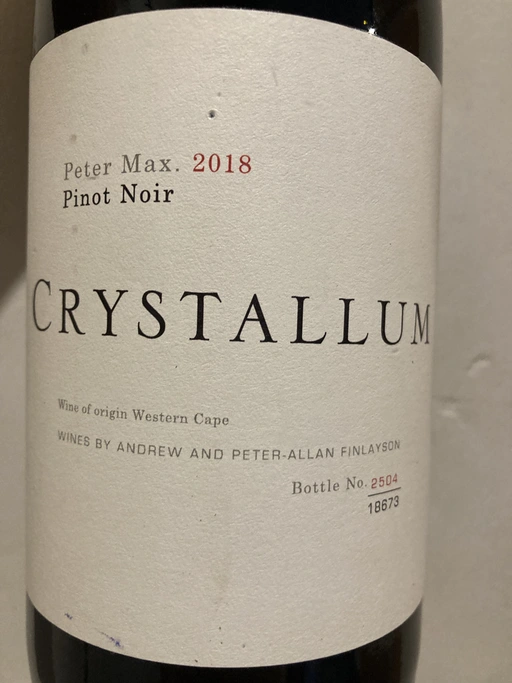

- Type
- Red Still, Dry
- Producer
- Crystallum
- Vintage
- 2018
- Location
- South Africa, WO Western Cape
- Grapes
- Pinot Noir
- Alcohol
- 13.5
- Sugar
- 2.4
- Price
- 844 UAH
- Cellar
- N/A
18673 bottles produced from a single vineyard called Peter Max, located on the hills of Hemel-en-Aarde ridge.
Ratings
2022-06-29 - 8.25
One of those cases where I can’t make a mere sip and fight for the right to finish the bottle. Yet it’s sad, cause it’s not available anymore in my local store. The first thing to notice is the pale colour of the wine. Apparently, caused by gentle extraction. A beautiful bouquet of fried sunflower seeds, raspberry, strawberry, dark chocolate, spices and gouache. Delicate on the palate, juicy and almost perfectly balanced with good acidity and velvety tannins. It is also flavourful and has a long-lasting aftertaste. To summarize, it is approachable and delicious Pinot Noir, stylistically closer to Bourgogne with a ripe twist.